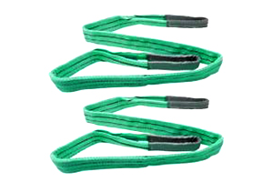
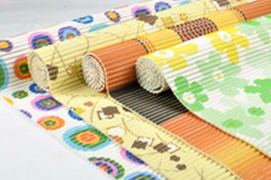
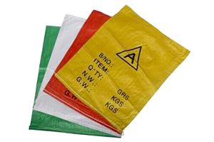
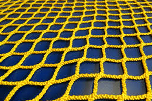
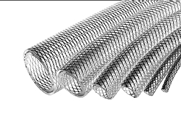

Polypropylene Multifilament Yarn
PPMF is marketed under the brand name'Threadlon'. These high tenacity Yarns are used for a multitude of purposes.

Applications






Salient Features
Threadlon High Tenacity Yarn
- High tenacity up to 8 g/d
- Wide range of denier from 200 to 6000.
- Available in FDY Flat, FDY Intermingle & FDY twisted
- UV protected
- Can replace Nylon or Polyester
- Various colours
- Excellent color fastness
- Impact resistant
- Resists most alkalis and acids
- Low moisture absorption
- Impact resistant
- Excellent dielectric properties
- Non-staining
- High heat resistance
- Can be customized as per requirement